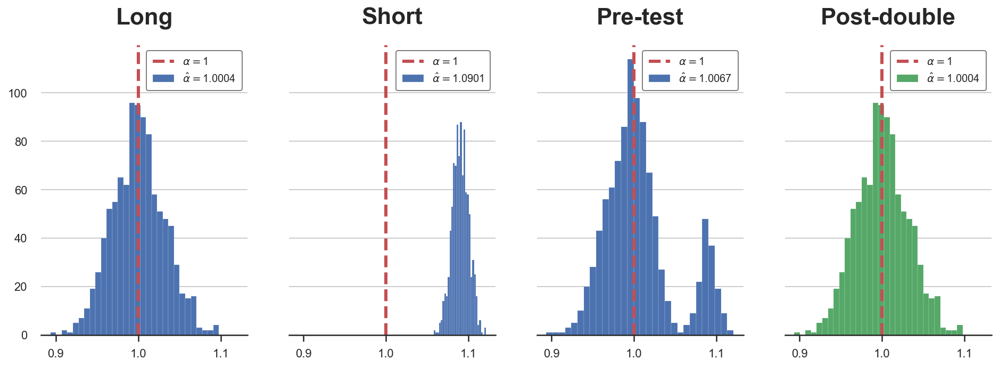
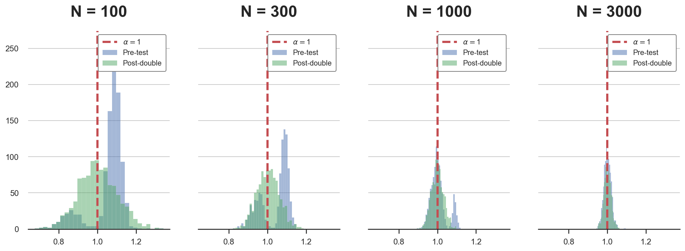
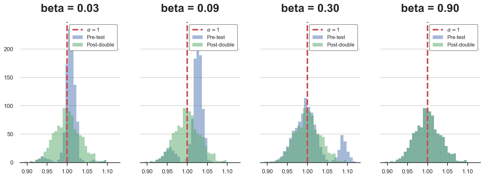
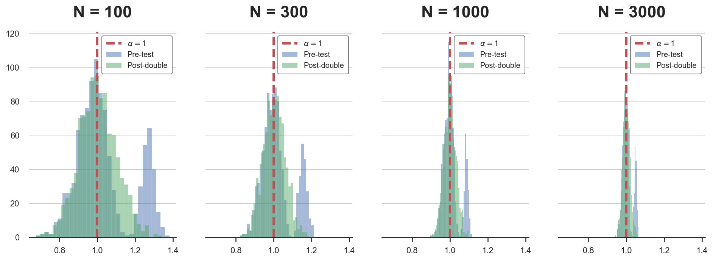

Double Debiased Machine Learning (part 2)

In the previous part of this blog post, we have seen how pre-testing can distort inference, i.e., how selecting control variables depending on their statistical significance results in wrong confidence intervals for the variable of interest. This bias is generally called regularization bias and also emerges in machine learning algorithms.
In blog post, we are going to explore a solution to the simple selection example, post-double selection, and a more general approach when we have many control variables and we do not want to assume linearity, double-debiased machine learning.
Recap
To better understand the source of the bias, in the first part of this post, we have explored the example of a firm that is interested in testing the effectiveness of an a campaign. The firm has information on its current ad spending and on the level of sales. The problem arises because the firm is uncertain on whether it should condition its analysis on the level of past sales.
The following Directed Acyclic Graph (DAG) summarizes the data generating process.
flowchart LR
classDef included fill:#DCDCDC,stroke:#000000,stroke-width:2px;
classDef excluded fill:#ffffff,stroke:#000000,stroke-width:2px;
classDef unobserved fill:#ffffff,stroke:#000000,stroke-width:2px,stroke-dasharray: 5 5;
D((ad spend))
Z((past sales))
Y((sales))
D --> Y
Z -- ??? --> Y
Z --> D
class D,Y included;
class Z excluded;
linkStyle 0 stroke:#00ff00,stroke-width:4px;
I import the data generating process dgp_tbd() from src.dgp and some plotting functions and libraries from src.utils.
%matplotlib inline
%config InlineBackend.figure_format = 'retina'
from src.utils import *
from src.dgp import dgp_pretest
df = dgp_pretest().generate_data()
df.head()
| ads | sales | past_sales | |
|---|---|---|---|
| 0 | 16.719800 | 19.196620 | 6.624345 |
| 1 | 7.732222 | 9.287491 | 4.388244 |
| 2 | 10.923469 | 11.816906 | 4.471828 |
| 3 | 8.457062 | 9.024376 | 3.927031 |
| 4 | 13.085146 | 12.814823 | 5.865408 |
We have data on $1000$ different markets, in which we observe current sales, the amount spent in advertisement and past sales.
We want to understand ads spending is effective in increasing sales. One possibility is to regress the latter on the former, using the following regression model, also called the short model.
$$ \text{sales} = \alpha \cdot \text{ads} + \varepsilon $$
Should we also include past sales in the regression? Then the regression model would be the following, also called long model.
$$ \text{sales} = \alpha \cdot \text{ads} + \beta \cdot \text{past sales} + \varepsilon $$
One naive approach would be to let the data decide: we could run the second regression and, if the effect of past sales, $\beta$, is statistically significant, we are good with the long model, otherwise we run the short model. This procedure is called pre-testing.
The problem with this procedure is that it introduces a bias that is called regularization or pre-test bias. Pre-testing ensures that this bias is small enough not to distort the estimated coefficient. However, it does not ensure that it is small enough not to distort the confidence intervals around the estimated coefficient.
Is there a solution? Yes!
Post-Double Selection
The solution is called post-double selection. The method was first introduced in Belloni, Chernozhukov, Hansen (2014) and later expanded in a variety of papers.
The authors assume the following data generating process:
$$ y = \alpha D + \beta X + u \newline D = \delta X + v $$
In our example, $Y$ corresponds to sales, $D$ corresponds to ads, $X$ corresponds to past_sales and the effect of interest is $\alpha$. In our example, $X$ is 1-dimensional for simplicity, but generally we are interested in cases where X is high-dimensional, potentially even having more dimensions than the number of observations. In that case, variable selection is essential in linear regression since we cannot have more features than variables (the OLS coefficients are not uniquely determined anymore).
Post-double selection consists in the following procedure.
- Reduced Form selection: lasso $Y$ on $X$. Select the statistically significant variables in the set $S_{RF} \subseteq X$
- First Stage selection: regress $D$ on $X$. Select the statistically significant variables in the set $S_{FS} \subseteq X$
- Regress $Y$ on $D$ and the union of the selected variables in the first two steps, $S_{FS} \cup S_{RF}$
The authors show that this procedure produces confidence intervals for the coefficient of interest $\alpha$ that have the correct coverage, i.e. the correct probability of type 1 error.
Note (1): this procedure is always less parsimonious, in terms of variable selection, than pre-testing. In fact, we still select all the variables we would have selected with pre-testing but, in the first stage, we might select additional variables.
Note (2): the terms first stage and reduced form come from the intrumental variables literature in econometrics. Indeed, the first application of post-double selection was to select instrumental variables in Belloni, Chen, Chernozhukov, Hansen (2012).
Note (3): the name post-double selection comes from the fact that now we are not performing variable selection once but twice.
Intuition
The idea behind post-double selection is: bound the omitted variables bias. In case you are not familiar with it, I wrote a separate blog post on omitted variable bias.
In our setting, we can express the omitted variable bias as
$$ \text{OVB} = \beta \delta \qquad \text{ where } \qquad \beta := \frac{Cov(X, Y)}{Var(X)}, \quad \delta := \frac{Cov(D, X)}{Var(D)} $$
As we can see, the omitted variable bias comes from the product of two quantities related to the omitted variable $X$:
- Its partial correlation with the outcome $Y$, $\beta$
- Its partial correlation with the variable of interest $D$, $\delta$
With pre-testing, we ensure that the partial correlation between $X$ the outcome $Y$, $\beta$, is small. In fact, we omit $Z$ when we shouldn’t (i.e. we commit a type 2 error) rarely. What do small and rarely mean?
When we are selecting a variable because of its significance, we ensure that it dimension is smaller than $\frac{c}{\sqrt{n}}$ for some number $c$, where $n$ is the sample size.
Therefore, with pre-testing, we ensure that, no matter what the value of $\delta$ is, the dimension of the bias is smaller than $\frac{c}{\sqrt{n}}$ which means that it converges to zero for sufficiently large $n$. This is why the pre-testing estimator is still consistent.
However, in order for our confidence intervals to have the right coverage, this is not enough. In practice, we need the bias to converge to zero faster than $\frac{1}{\sqrt{n}}$. Why?
To get an intuition for this result, we need to turn to the Central Limit Theorem. The CLT tells us that for large $n$ the distribution of the sample average of a random variable $X$ converges to a normal distribution with mean $\mu$ and standard deviation $\frac{\sigma}{\sqrt{n}}$, where $\mu$ and $\sigma$ are the mean and standard deviation of $X$. To do inference, we usually apply the Central Limit Theorem to our estimator to get its asymptotic distribution, which in turn allows us to build confidence intervals (using the mean and the standard deviation). Therefore, if the bias is not sensibly smaller than the standard deviation of the estimator, the confidence intervals are going to be wrong. Therefore, we need the bias to converge to zero faster than the standard deviation, i.e. faster than $\frac{1}{\sqrt{n}}$.
In our setting, the omitted variable bias is $\beta \gamma$ and we want it to converge to zero faster than $\frac{1}{\sqrt{n}}$. Post-double selection guarantees that
- Reduced form selection (pre-testing): any “missing” variable $j$ has $|\beta_j| \leq \frac{c}{\sqrt{n}}$
- First stage selection (additional): any “missing” variable $j$ has $|\delta_j| \leq \frac{c}{\sqrt{n}}$
As a consequence, as long as the number of omitted variables is finite, the omitted variable bias is going to converge to zero at a rate $\frac{1}{n}$, which is faster than $\frac{1}{\sqrt{n}}$. Problem solved!
Application
Let’s now go back to our example and test the post-double selection procedure. In practice, we want to do the following:
- First Stage selection: regress
adsonpast_sales. Check ifpast_salesis statistically significant - Reduced Form selection: regress
salesonpast_sales. Check ifpast_salesis statistically significant - Regress
salesonadsand includepast_salesonly if it was significant in either one of the two previous regressions
I update the pre_test function from the first part of the post to compute also the post-double selection estimator.
def pre_test(d='ads', y='sales', x='past_sales', K=1000, **kwargs):
# Init
alphas = pd.DataFrame({'Long': np.zeros(K),
'Short': np.zeros(K),
'Pre-test': np.zeros(K),
'Post-double': np.zeros(K)})
# Loop over simulations
for k in range(K):
# Generate data
df = dgp_pretest().generate_data(seed=k, **kwargs)
# Compute coefficients
alphas['Long'][k] = smf.ols(f'{y} ~ {d} + {x}', df).fit().params[1]
alphas['Short'][k] = smf.ols(f'{y} ~ {d}', df).fit().params[1]
# Compute significance of beta and gamma
p_value_ydx = smf.ols(f'{y} ~ {d} + {x}', df).fit().pvalues[2]
p_value_yx = smf.ols(f'{y} ~ {x}', df).fit().pvalues[1]
p_value_dx = smf.ols(f'{d} ~ {x}', df).fit().pvalues[1]
# Select pre-test specification based on regression of y on d and x
if p_value_ydx<0.05:
alphas['Pre-test'][k] = alphas['Long'][k]
else:
alphas['Pre-test'][k] = alphas['Short'][k]
# Select post-double specification based on regression of y on d and x
if p_value_yx<0.05 or p_value_dx<0.05:
alphas['Post-double'][k] = alphas['Long'][k]
else:
alphas['Post-double'][k] = alphas['Short'][k]
return alphas
alphas = pre_test()
We can now plot the distributions (over simulations) of the estimated coefficients.
def plot_alphas(alphas, true_alpha):
# Init plot
K = len(alphas.columns)
fig, axes = plt.subplots(1, K, figsize=(4*K, 5), sharey=True, sharex=True)
# Make one plot for each set of coefficients
for i, key in enumerate(alphas.columns):
axes[i].hist(alphas[key].values, bins=30, lw=.1, color=f'C{int(i==3)*2}')
axes[i].set_title(key)
axes[i].axvline(true_alpha, c='r', ls='--')
legend_text = [rf'$\alpha=${true_alpha}', rf'$\hat \alpha=${np.mean(alphas[key]):.4f}']
axes[i].legend(legend_text, prop={'size': 10}, loc='upper right')
plot_alphas(alphas, true_alpha=1)

As we can see, the post-double selection estimator always correctly selects the long regression and therefore has the correct distribution.
Double-checks
In the last post, we ran some simulations in order to investigate when pre-testing bias emerges. We saw that pre-testing is a problem for
- Small sample sizes $n$
- Intermediate values of $\beta$
- When the value of $\beta$ depends on the sample size
Let’s check that post-double selection removes regularization bias in all the previous cases.
First, let’s simulate the distribution of the post-double selection estimator $\hat \alpha_{postdouble}$ for different sample sizes.
Ns = [100,300,1000,3000]
alphas = {f'N = {n:.0f}': pre_test(N=n) for n in Ns}
def compare_alphas(alphas, true_alpha):
# Init plot
fig, axes = plt.subplots(1, len(alphas), figsize=(4*len(alphas), 5), sharey=True, sharex=True)
# Make one plot for each set of coefficients
for i, key in enumerate(alphas.keys()):
axes[i].hist(alphas[key]['Pre-test'], bins=30, lw=.1, alpha=0.5)
axes[i].hist(alphas[key]['Post-double'], bins=30, lw=.1, alpha=0.5, color='C2')
axes[i].set_title(key)
axes[i].axvline(true_alpha, c='r', ls='--')
axes[i].legend([rf'$\alpha=${true_alpha}', 'Pre-test', 'Post-double'],
prop={'size': 10}, loc='upper right')
compare_alphas(alphas, true_alpha=1)

For small samples, the distribution of the pre-testing estimator is not normal but rather bimodal. From the plots we can see that the post-double estimator is gaussian also in small sample sizes.
Now we repeat the same exercise, but for different values of $\beta$, the coefficient of past_sales on sales.
betas = 0.3 * np.array([0.1,0.3,1,3])
alphas = {f'beta = {b:.2f}': pre_test(b=b) for b in betas}
compare_alphas(alphas, true_alpha=1)

Again, the post-double selection estimator has a gaussian distribution irrespectively of the value of $\beta$, while he pre-testing estimator suffers from regularization bias.
For the last simulation, we change both the coefficient and the sample size at the same time.
betas = 0.3 * 30 / np.sqrt(Ns)
alphas = {f'N = {n:.0f}': pre_test(b=b, N=n) for n,b in zip(Ns,betas)}
compare_alphas(alphas, true_alpha=1)

Also in this last case, the post-double selection estimator performs well and inference is not distorted.
Double Debiased Machine Learning
So far, we only have analyzed a linear, univariate example. What happens if the dimension of $X$ increases and we do not know the functional form through which $X$ affects $Y$ and $D$? In these cases, we can use machine learning algorithms to uncover these high-dimensional non-linear relationships.
Chernozhukov, Chetverikov, Demirer, Duflo, Hansen, Newey, and Robins (2018) investigate this setting. In particular, the authors consider the following partially linear model.
$$ Y = \alpha D + g(X) + u \ D = m(X) + v $$
where $Y$ is the outcome variable, $D$ is the treatment to interest and $X$ is a potentially high-dimensional set of control variables.
Naive approach
A naive approach to estimation of $\alpha$ using machine learning methods would be, for example, to construct a sophisticated machine learning estimator for learning the regression function $\alpha D$ + $g(X)$.
- Split the sample in two: main sample and auxiliary sample [why? see note below]
- Use the auxiliary sample to estimate $\hat g(X)$
- Use the main sample to compute the orthogonalized component of $Y$ on $X$: $\ \hat u = Y - \hat{g} (X)$
- Use the main sample to estimate the residualized OLS estimator from regressing $\hat u$ on $D$
$$ \hat \alpha = \left( D’ D \right) ^{-1} D’ \hat u $$
This estimator is going to have two problems:
- Slow rate of convergence, i.e. slower than $\sqrt(n)$
- It will be biased because we are employing high dimensional regularized estimators (e.g. we are doing variable selection)
Note (1): so far we have not talked about it, but variable selection procedure also introduce another type of bias: overfitting bias. This bias emerges because of the fact that the sample used to select the variables is the same that is used to estimate the coefficient of interest. This bias is easily accounted for with sample splitting: using different sub-samples for the selection and the estimation procedures.
Note (2): why can we use the residuals from step 3 to estimate $\alpha$ in step 4? Because of the Frisch-Waugh-Lovell theorem. If you are not familiar with it, I have written a blog post on the Frisch-Waugh-Lovell theorem here.
Orthogonalization
Now consider a second construction that employs an orthogonalized formulation obtained by directly partialling out the effect of $X$ from $D$ to obtain the orthogonalized regressor $v = D − m(X)$.
-
Split the sample in two: main sample and auxiliary sample
-
Use the auxiliary sample to estimate $\hat g(X)$ from
$$ Y = \alpha D + g(X) + u \ $$
-
Use the auxiliary sample to estimate $\hat m(X)$ from
$$ D = m(X) + v $$
-
Use the main sample to compute the orthogonalized component of $D$ on $X$ as
$$ \hat v = D - \hat m(X) $$
-
Use the main sample to estimate the double-residualized OLS estimator as
$$ \hat \alpha = \left( \hat{v}’ D \right) ^{-1} \hat{v}’ \left( Y - \hat g(X) \right) $$
The estimator is root-N consistent! This means that not only the estimator converges to the true value as the sample sizes increases (i.e. it’s consistent), but also its standard deviation does (i.e. it’s root-N consistent).
However, the estimator still has a lower rate of convergence because of sample splitting. The problem is solved by inverting the split sample, re-estimating the coefficient and averaging the two estimates. Note that this procedure is valid since the two estimates are independent by the sample splitting procedure.
A Cautionary Tale
Before we conclude, I have to mention a recent research paper by Hünermund, Louw, and Caspi (2022), in which the authors show that double-debiased machine learning can easily backfire, if we apply blindly.
The problem is related to bad control variables. If you have never heard this term, I have written an introductory blog post on good and bad control variables here. In short, conditioning the analysis on additional features is not always good for causal inference. Depending on the setting, there might exist variables that we want to leave out of our analysis since their inclusion can bias the coefficient of interest, preventing a causal interpretation. The simplest example is variables that are common outcomes, of both the treatment $D$ and outcome variable $Y$.
The double-debiased machine learning model implicitly assumes that the control variables $X$ are (weakly) common causes to both the outcome $Y$ and the treatment $D$. If this is the case, and no further mediated/indirect relationship exists between $X$ and $Y$, there is no problem. However, if, for example, some variable among the controls $X$ is a common effect instead of a common cause, its inclusion will bias the coefficient of interest. Moreover, this variable is likely to be highly correlated either with the outcome $Y$ or with the treatment $D$. In the latter case, this implies that post-double selection might include it in cases in which simple selection would have not. Therefore, in presence of bad control variables, doule-debiased machine learning might be even worse than simple pre-testing.
In short, as for any method, it is crucial to have a clear understanding of the method’s assumptions and to always check for potential violations.
Conclusion
In this post, we have seen how to use post-double selection and, more generally, double debiased machine learning to get rid of an important source of bias: regularization bias.
This contribution by Victor Chernozhukov and co-authors has been undoubtedly one of the most relevant advances in causal inferences in the last decade. It is now widely employed in the industry and included in the most used causal inference packages, such as EconML (Microsoft) and causalml (Uber).
If you (understandably) feel the need for more material on double-debiased machine learning, but you do not feel like reading academic papers (also very understandable), here is a good compromise.
In this video lecture, Victor Chernozhukov himself presents the idea. The video lecture is relatively heavy on math and statistics, but you cannot get a more qualified and direct source than this!
References
[1] A. Belloni, D. Chen, V. Chernozhukov, C. Hansen, Sparse Models and Methods for Optimal Instruments With an Application to Eminent Domain (2012), Econometrica.
[2] A. Belloni, V. Chernozhukov, C. Hansen, Inference on treatment effects after selection among high-dimensional controls (2014), The Review of Economic Studies.
[3] V. Chernozhukov, D. Chetverikov, M. Demirer, E. Duflo, C. Hansen, W. Newey, J. Robins, Double/debiased machine learning for treatment and structural parameters (2018), The Econometrics Journal.
[4] P. Hünermund, B. Louw, I. Caspi, Double Machine Learning and Automated Confounder Selection - A Cautionary Tale (2022), working paper.
Related Articles
- Double Debiased Machine Learning (part 1)
- Understanding Omitted Variable Bias
- Understanding The Frisch-Waugh-Lovell Theorem
- DAGs and Control Variables
Code
You can find the original Jupyter Notebook here:
https://github.com/matteocourthoud/Blog-Posts/blob/main/pds.ipynb
I hold a PhD in economics from the University of Zurich. Now I work at the intersection of economics, data science and statistics. I regularly write about causal inference on Medium.